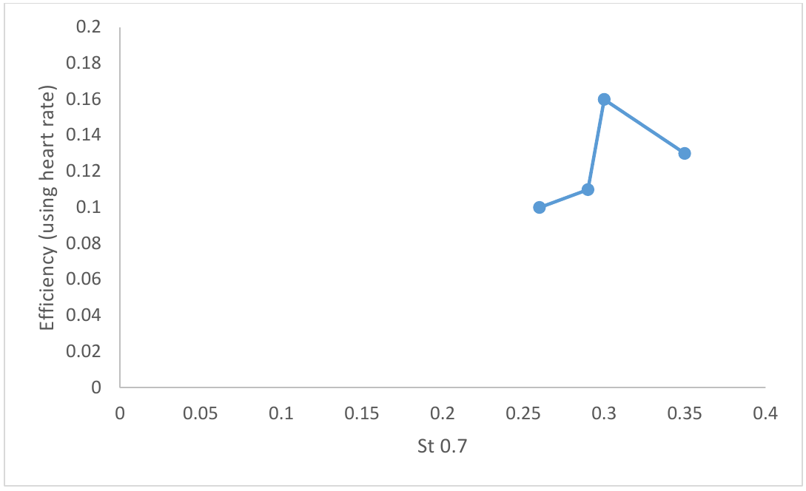

Contents | About | Contact
article 23, issue 09
Efficiency of human-powered sail pumping (condensed version)Sergio E. Perez, Mark Wisniewski and Jordan Kendall
April 21, 2017Abstract
Sail pumping involves oscillating a sail repeatedly in a rolling and yawing motion about the mast base. The motion is similar to that of aquatic animals such as fish and turtles propelling themselves by oscillating their fins or flippers.
We find that humans performing sail pumping at cruising speeds in zero-wind conditions naturally stroke at a Strouhal number that is in the same range used by aquatic animals and birds, a range known to produce efficient propulsion.
Stroking in the correct Strouhal number range does not guarantee the highest possible efficiency. Indeed, the efficiency of pumping with windsurfer sails was found to below 20%, which is considerably lower than laboratory results for rigid oscillating and flapping foils.
We also found the heart rate to be an accurate method for determining the human power output. Sail pumping efficiencies calculated using the heart rate were within 2-3 percentage points of efficiencies measured with a PC-based force data acquisition system.
[Editors' note: this is a condensed version of the article. The complete article may be downloaded as PDF (660 kB, 18 pp) or printer-friendly PDF (650 kB, 15 pp, two-column layout).]
Introduction
While windsurfers routinely oscillate their sails (a process known as “sail pumping”) to increase speed in light winds or to provide a burst of acceleration to hasten the transition to planing, sail pumping has been the topic of research only in the context of the physiological response to the pumping. No research that we are aware of has been conducted on the efficiency of pumping sails.
As environmental concerns become more important, sail or airfoil pumping may become a viable method of propelling future sailing ships when wind conditions are light. Once wind conditions are stronger, the foils could be used as sails.
In this work we investigate the efficiency of human-powered sail pumping in zero wind conditions using a windsurfer sail and mast/boom assembly mounted on a wheeled cart, as shown below. The sail is not completely rigid and the top part twists as it is pumped. [This automatically gives the shape of a propeller blade to some extent and is appropriate, as during the stroke the sail momentarily acts as a one-bladed propeller. Ed.]
The bottom of the mast is attached to the platform using a windsurfer articulated joint, and the mast rolls from side to side to provide translational motion to the sail, which also simultaneously yaws about the mast.
A video of the sail pumping motion may be seen at https://www.youtube.com/watch?v=2fZXNxqJbtQ and https://www.youtube.com/watch?v=VpxNAKokcMg.
The general term “wing” will be used to denote what is being oscillated: a sail, fin, airfoil or flipper.
Windsurfer cart showing the sail, here untwisted, between two strokes.
Sail rotation axes: Roll and Yaw.
There are two general types of stroking methods: oscillation and flapping. In oscillating motion, the wing is attached to the body at its leading edge, as in the tail fins of fish, whales and dolphins. In flapping motion, as in bird wings or the the fins of sea turtles, the wing is attached to the body at its root or base. Sail pumping involves flapping since the mast is attached to the base of the sail.
Overview
The pitch Θ (Theta) of the sail is the angle of the wing relative to the direction of vehicle motion [not to be confused by the pitch angle of the rig relative to the ground, Ed.], while α (alpha) is the angle of the wing into the resultant flow due to the translational motion of the wing and the forward motion of the vehicle, as shown below. The angle α is referred to as the angle of attack of the wing.
The translational displacement of the wing is referred to as heave h, and has a value of zero at the midpoint of the foil’s translation. The maximum heave is denoted by h₀ and represents one half of the total amplitude of the foil translation at a given point. The heave is normally measured at the leading edge of the wing (the center of rotation or pivoting or yawing axis). The parameter h₀/c is used in this and other studies as a dimensionless parameter for the heave, c being the wing's chord (= its width as viewed from the side).The phase angle φ is an important parameter, and describes the difference in phase between the pitch of the wing Θ as it leads the heave of the foil h. A phase angle of 0 degrees results in the heave and pitch angle reaching their maximum values at the same time (the end of the stroke), while a 90 degree phase angle results in the wing at its minimum angle when the heave reaches its maximum at the end of a stroke.
An important parameter is the Strouhal number St, given by:
St = f A / V
Where f is the frequency of oscillation of the wing, A is the amplitude of the stroke, usually measured at the point of the foil rotation, and V is the speed of the craft. The Strouhal number can also be thought of as half of the ratio of the average translational speed of the wing to the speed of the craft.
Since the mast and sail in this work are rolling in an arc about the bottom of the mast, the amplitude of oscillation of each point depends on the height over the bottom. The sail thus experiences a range of Strouhal numbers. For the purposes of this study we will report the Strouhal number using the amplitude at 0.7 times the sail height or span, as this was the method used in the flapping foil literature to capture properties at the center of effort of the sail.
In addition to the amplitude measured at the leading edge of the sail, one may consider a Strouhal number measured at its trailing edge:
StTE = f ATE / V
which uses the maximum translational amplitude A of the foil occurring at the trailing edge of the foil. Studies of Strouhal numbers made on aquatic animals and birds typically use this version of St.
Previous work
D.A. Read, F.S. Hover and others (see references in complete article) have found that computer-controlled rigid oscillating foils can achieve high propulsive efficiencies - we stress that flapping foils are different. J.M. Anderson and others found even higher efficiencies: 86% at St = 0.3, as compared to 72% at St = 0.16 for Read and 64% for Hover at St= 0.25.
They also discovered that the maximum heave to chord (h₀/c) ratios they tested (1.0 for Read and Hover, and 0.75 for Anderson) resulted in peak efficiencies, as did maximum angles of attack α between 15 and 20 degrees. In addition, they found that a peak in the efficiency is found when the phase angle is around 90 degrees. These xperiments performed with the foil heaving linearly, with end caps at the foil tips to simulate an infinite aspect ratio.
Hover experimented with a variety of stroke-timing schemes, concluding that controlling the foil angle of attack with a sine function (as opposed to controlling the pitch angle with a sine function) gives optimal results. Read found that the lateral forces could be up to 4 times greater than the generated thrust forces.
For foils undergoing flapping motion (more similar to the windsurfer rig), V. Polidoro found that a foil aspect ratio of about 4 provided optimal thrust. S.C. Licht and others discovered that flapping motion with additional forwards and backwards movement can result in significant increase in efficiency at maximum angles of attack of 40 degrees. The motion involves a thrust producing stroke downstream and a feathered stroke upstream, and mimics the stroking of sea turtles.
Nature also appears to pay close attention to the Strouhal number. G.S. Triantafyllou, J.J. Rohr, G. Taylor and others reported that dolphins, sharks, bony fish, birds, bats and insects, swim or cruise at 0.2 < StTE < 0.4.
Methods
Experiments were conducted using a Gaastra 6.5 m² windsurfing sail mounted on a large skateboard using a conventional windsurfer mast and wishbone boom rig. The resulting oscillations classify as flapping. Due to the twisting of the top portion of the sail the behaviour is different than with rigid folis. The sail height is 4.5 m, and the chord length at its widest point is 1.7 m, with an average chord of 1.1 m. The sails's aspect ratio is 4.1 and its center of effort (CE) is located 2 m over the deck, the same as its centroid height at 44%.
Experiments were first conducted on a windsurfer, but we found that the side lift forces caused considerable periodic yawing which adversely affected efficiency. Rather than modifying the windsurfer board in order to minimize this effect, we decided to conduct our experiments on land, using a large skateboard constructed for this purpose.
Power needed for propulsion
We determined the total drag force (rolling resistance plus air resistance) of the board and rider by measuring the tension on a spring scale pulled by a bicycle at various speeds over a wooden gymnasium floor. The tests were performed with the rider on the board, without the sail rig. The drag force from the sail rig was calculated by treating the rig as a vertical cylinder with a drag coefficient (Cd) of 1, using the average diameter of the mast. The figure below shows the drag force of the board and rider with and without the sail, as a function of constant-velocity values obtained after acceleration. It shows the total drag force results for pilot 1 (1.83m (6 ft), 77 kg (170 lb)) with and without the sail rig, as a function of speed. The error in measuring the drag force was probably around ±5%. The data for the total drag are well-fit by a 2nd degree polynomial: Drag (N) ~ 1.8 - 0.092 V + 1.9 V² (V in m/s).
The power in W at any given point of the curve is simply the drag times the velocity or ~ 1.8 V - 0.092 V² + 1.9 V³ (V in m/s).
Human power calculated via force and movement measurements
We measured force applied to the windsurfer boom by a pressure sensor connected to an inflated bladder (see photo below). As force was applied to the bladder, a laptop computer carried on the pilot’s back recorded pressure readings every 0.003 seconds. The sensor was calibrated by hanging weights from the bladder. The sensitivity of the instrument depended on the inflation pressure, and a pressure of ~128 kPa (18.5 psig) was found to be adequate.
Bladder for measuring force applied by pilot, attached to the boom. In this configuration the pilot pushes on the bladder for the stroke. For measuring the pulling stroke, the bladder is mounted on the inside of the boom.
Only one sensor was used, secured to the boom at a position where one of the pilot’s hands would grip. For each of 4 runs, the sensor location was moved and four sets of data taken (each left and right hands in push and pull configurations). The power input to the boom was calculated as force multiplied by the stroke velocity.
The windsurfer rig rotates about the roll and yaw axes while oscillating back and forth. We used the gyroscope sensors of a smartphone to measure yaw and roll of the rig, with a SensorLog app for processing and displaying the data. The sensor output was tested against measurements made with slow motion videos of sail pumping, as well as experiments in which the yaw and roll were simultaneously changed through arcs of the same magnitude encountered in our runs. The sensor values were found to be well within 5 degrees of measured angles. Data were collected at a sampling rate of 30 Hz and uploaded to a PC after a run was complete.
The yaw data from the sensors were used directly to calculate the pitch angle Θ. The heave (translational position of the sail) was calculated by simple geometry relating the roll angle to displacement. The translational velocity of the sail was calculated by computing the time-dependent change in heave readings. The angle of attack was calculated at each sampling time by finding the resultant of the incoming air speed into the board and the translational velocity of the foil.
Human power estimated from heart rate
We also measured pilot power output by measuring heart rates. J. Achten and A. Jeukendrup report that the heart rate can be a reliable method of determining human power output, but care must be taken to avoid “cardiac drift”, where the heart rate increases after 5-10 minutes of uninterrupted exertion. H. Hilliskorpi et al. showed that the mode of the exertion was not important – heart rate measurements from hand cranking, pedaling or rowing should give similar power results. We confirmed this by comparing the power output from a cycling dynamometer with that from an elliptical trainer using hand and leg motion, resulting in virtually identical power results from the same heart rates. We measured the relationship between power output and heart rate for the pilots using two Matrix exercise bicycles having an accuracy specified by the manufacturer to be within 5%. The figure below shows the relationship between human power output and heart rate for two of the three pilots used for the study.
The figure below shows the heart rate-estimated power of Pilot 2 as a function of stroking speed and cart velocity. Other pilots had very similar results. [It is also seen that a minimum of 75 W is required to achieve a speed of 1.685 m/s and that faster stroking increases the speed but at a lower efficiency. Ed.]
None of the pilots was aware of his Strouhal number at the time the experiments were conducted. The pilots were not world-class athletes, but individuals in fairly good physical condition. Pilots 1 and 3 were about 20 years of age, and the age of pilot 2 about 3 times that.
All the pilots experienced some initial difficulties learning to stroke properly and practiced about one half to one hour over several sessions. Stroking the sail was hard work at the beginning, with resulting heart rates over 150 beats per minute (~200 W). After some experience, the pilots were able to stroke in a more relaxed mode, with typical sail pumping heart rates between 106 –120 beats per minute (~50-100 W).
Results
The efficiency η (eta) of propulsion with stroking is defined as: η = propulsive power needed / human power needed
The power needed for propulsion is the thrust times the vehicle velocity. The thrust was assumed equal to the drag measured at the same time as this velocity.
Using the heart rate result of 75 W needed to achieve 1.685 m/s (pilot 2) and the power required for propulsion at this speed of 11.85 W (from the polynominal fit equation), this gives η = 11.85 / 75 = 15.8 %.
In a similar manner, the efficiency using sensor data is calculated, the human power being the force measured by the bladder sensor times the velocity at this instant. Averaging over the strokes of the four runs (one each pulling and pushing for the left and the right arm), the data of pilot 2 give 17.8 %.
The results for two pilots are summarized below, and show that the efficiencies measured using the heart rate are within 15% of those measured using the sensor. This is an important finding for further tests that may be conducted on the water, because of the ease with which heart rate data can be taken.
Pilot Efficiency (heart rate) Efficiency (sensor) St
StTE Phase Angle ho/c(0.7) ho/c(0.44) 1 15.6 % 18.2% 0.4
0.5 100° 0.3 0.2 2
15.8% 17.8% 0.3
0.4 70° 0.3 0.2
Table 1. Results of experiments. St refers to the leading edge, StTE to the trailing edge, 0.7 to 0.7 times the sail height, 0.44 to 0.44 times the sail height = the center of effort of the sail.The table shows that the pilots stroked nearly in the range of as found in nature (0.2< StTE<0.4 (Taylor (2003)), a range shown to be the most efficient, and in the same range of phase angle found efficient in Anderson, Read, and Hover.
Froude efficiency
We now address the efficiency results, which are quite low compared to the maximum efficiencies cited in the literature for oscillating and flapping foils. Using a hot-wire anemometer, we measured the maximum speed of the air exiting the sail as 4 m/s relative to the board, with the board moving at 2.25 m/s relative to the ground, at about 1-2 m behind the sail and 2 m above the deck. From this we calculate the Froude efficiency:
ηFroude = 1 / (1 + 0.5 (Vincrease through propulsor / Vboard)) = 72 %
The Froude efficiency assumes frictionless flow and considers only the inherent kinetic energy losses behind the propulsor. The equation shows that a propulsor is most efficient when it increases the speed of the incoming fluid as little as possible. According to Stinton(1984), modern aircraft propellers can achieve efficiencies of about 0.8 times the Froude efficiency [propellers for human powered aircraft even over 0.9. Ed.], which suggests that our sail pumping could reach an efficiency of about 58 % on this basis. It is clear that with sail pumping there are irreversibilties that cannot be attributed to excess exit velocities. It appears that the phase angle, exit velocity and Strouhal number can be eliminated as possible causes for the low efficiencies, and we next address the maximum angle of attack. [for this see complete article]
Efficiency vs. St and ho/c
The figure below shows the results from various experimental runs in which the stroking style was varied. They include very slow stroking, stroking with a feathering return, stroking with more exaggerated pitch, and normal stroking. A peak in the efficiency can be seen at Strouhal number of 0.3 for the normal stroking of Pilot 2. This peak is similar to that found in the literature results at about the same Strouhal number.

The figure below shows the effects of ho/c on efficiency, from the oscillating foil experiments of J.M. Anderson et al. Our results used a ho/c ratio of only 0.3 due to the limits of the arm length of the pilots.
Discussion
It is at first glance remarkable that the pilots naturally stroked at StTE values (0.4 and 0.5) very close to those used in nature (0.2 to 0.4 with efficiency peaking at about 0.3). Humans and animals seem to naturally find this "sweet spot". While it may be tempting to attribute this to some form of primordial connection between humans and animals, the reason that humans stroke in the most efficient range is probably that we feel subtle feedback as we stroke. If St gets too high or too low we work harder, and the body may sense the difference.
G.S. Triantafyllou et al. also showed that the preferred St range has a theoretical basis. They demonstrated that optimal stroking efficiencies are achieved at foil oscillation frequencies that result in maximum amplification of the unstable average wake behind the foil, which occurred at 0.25< StTE< 0.35. The authors also showed that many fish species stroked in exactly this range.
See the complete article for further discussion.
Conclusions
Human-powered sail pumping efficiencies of nearly 20% were measured at Strouhal numbers of 0.3 and 0.4 (at 0.7 of the mast height and the leading edge) and 0.4 and 0.5 (at the trailing edge). This is about in the St range considered efficient in the literature as well as that used by animals in nature.
The low efficiencies of human-powered sail pumping (compared to the maximum efficiencies measured in the flapping foil literature of about 80%) can be attributed to several factors manifested during the testing: high maximum angles of attack, low heave to chord ratios, and the poor aerodynamics of a sail compared to a rigid foil.
The heave to chord ratio may be improved to some degree by using a sail with a smaller chord. The aerodynamics and maximum angle of attack can also be modified. We estimate that it may be possible to achieve efficiencies of about 70% using a rigid wing and the proper angle of attack.
Our results show that operating in the correct Strouhal number range does not necessarily preclude inefficient operation. The twist in a sail during pumping may be beneficial as in the case of the tests performed here, it brought the angle of attack near the top of the sail into an efficient range. However, the angle of attack near the center of effort of the sail (where there is little or no twist) was too high.
The heart rate of the pilots was found to give power input readings that were within 15% of readings taken using an electronic force-data acquisition system. This is a very useful finding, especially when measurements need to be performed on the water or anywhere electronic equipment is impractical.
We are in the process of building a rigid sail to determine if sail pumping efficiency can be improved. Our goal is to eventually construct a small boat to test sail pumping under marine conditions and low wind speeds. It is hoped that sail pumping will be more efficient as an auxiliary power source for sailboats in light wind conditions than conventional marine propellers.
About the authors and acknowledgements
Sergio E. Perez, PhD, is a professor at the U.S. Merchant Marine Academy Department of Marine Engineering, Kings Point, NY 11024, USA. He can be contacted at perezs(at)usmma.edu.
Mark Wisniewski is a 3rd Assistant Engineer.
Jordan Kendall is a Midshipman 1st Class.
The authors wish to thank Joseph Poliseno and Dean Taha for their continuing support and in addition Joseph Kass, Raymond Granville, Richard Crook, Richard Dominique, Briana Buderus, Joshua McMahon, Maureen White and William Fell.
References
See the see complete article